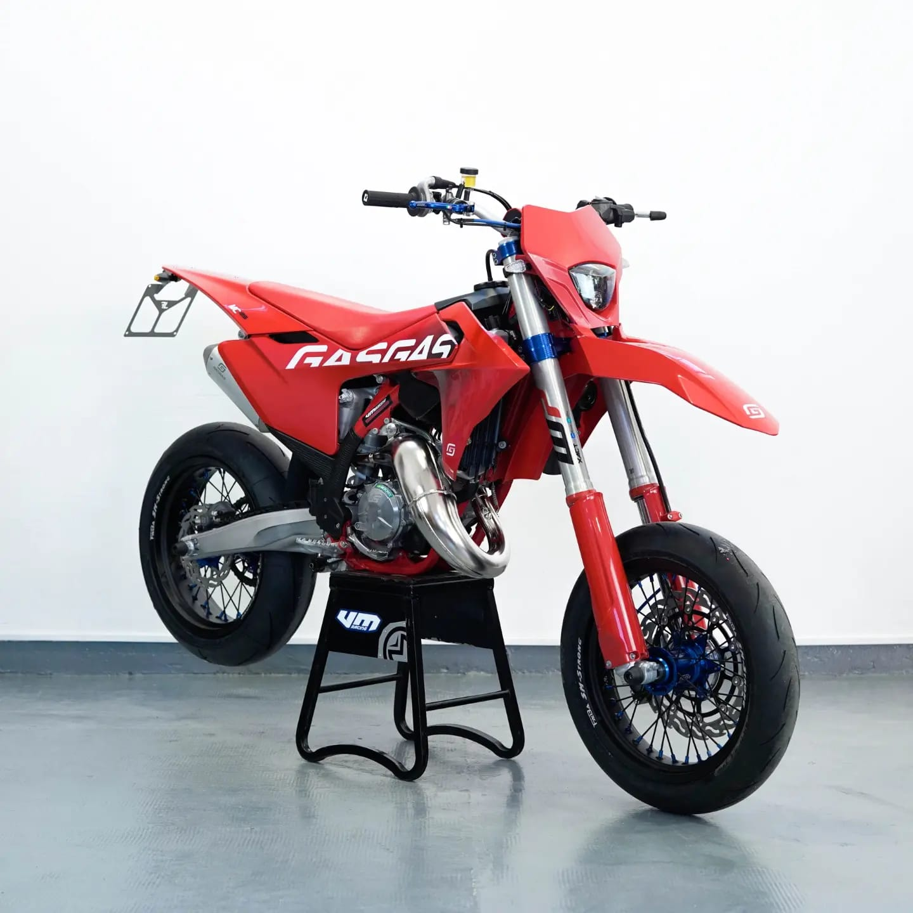

GasGas 125
Prezzo: € 12.899
Caratteristiche Tecniche:
- Motore: 1 cilindro, 2 tempi
- Cilindrata: 125 cc
- Potenza: 37 CV
- Trasmissione: 6 marce
- Sospensione anteriore: Forcella a steli rovesciati WP
- Sospensione posteriore: Monoammortizzatore WP
- Peso: 92 kg
- Capacità serbatoio: 8 litri